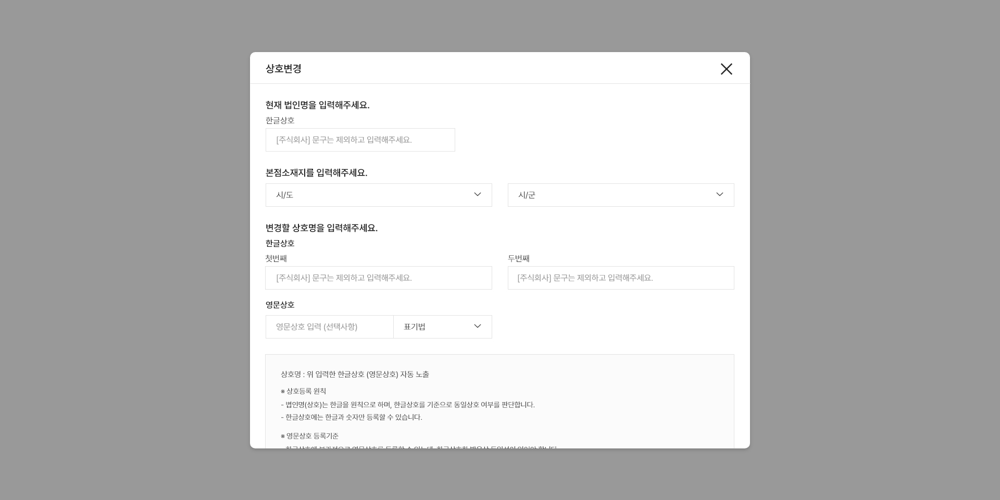

Company
상세보기
프로젝트명
소리법무사 (변경등기)
작업기간
2023.09.05 ~ 2023.09.11
작업내역
기존 사이트 외 새로운 사이트 생성, 기존 사이트와 일부 디자인 동일로 UI디자인 및 웹퍼블리싱
적용기술
XD, VScode((PHP)HTML, CSS)
기여도
UI (일부 디자인 활용, 50%) / 웹 퍼블리싱 (일부 퍼블리싱 활용, 50%)
메인 화면

메인화면은 기존 소리법무사 웹사이트 디자인과 동일합니다.
중앙 메뉴 부분이 변경 되었으며, 웹디자인과 웹퍼블리싱은 기존과 동일한 부분입니다.
새로운 사이트 제작을 위해 기존 사이트와 동일하게 가며 필요한 부분만 변경되었습니다.
상호변경 상세보기 화면
기존 사이트에 없던 모달영역입니다.
해당 각 메뉴를 선택하면 모달창이 나타나며 상세입력 할 수 있습니다.